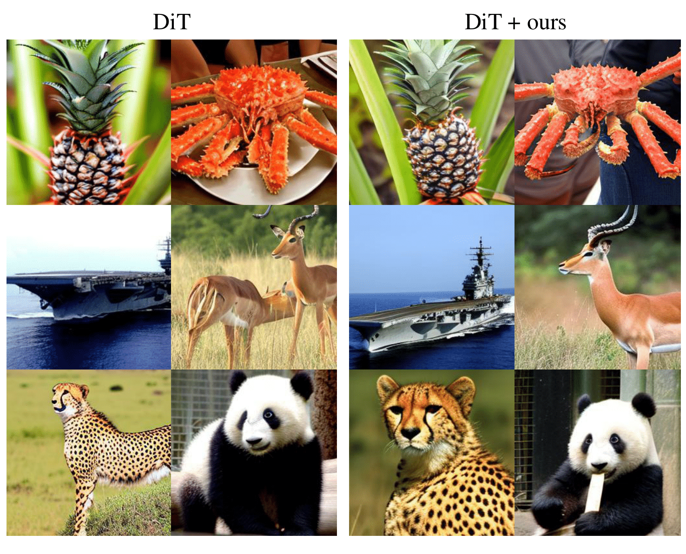
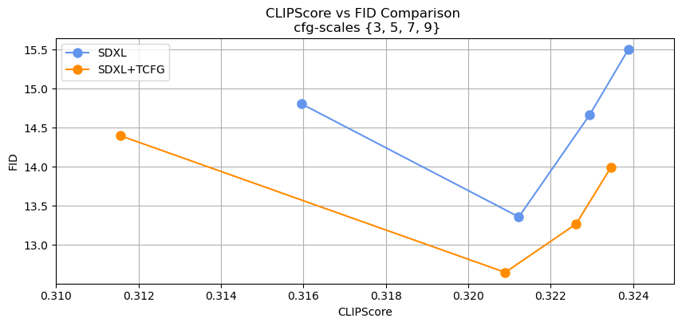

Results

Our results on SD3, SDXL, and SD1.5

Our results on DiT
Quantitative Results on Stable Diffusion
| FID ↓ | CLIPScore ↑ | ||
|---|---|---|---|
| SD v1.5 | original | 13.26 | 0.31 |
| + ours | 13.12 | 0.31 | |
| SDXL | original | 13.36 | 0.32 |
| + ours | 12.65 | 0.32 | |
| SD v3 | original | 16.66 | 0.32 |
| + ours | 13.74 | 0.32 |
Zero-shot FID and CLIPScore measured on MSCOCO 30k. Our method consistently improves FID across all models—Stable Diffusion v1.5, SDXL, and SD v3—while maintaining a nearly identical CLIPScore.
Quantitative Results on DiT
| FID ↓ | sFID ↓ | Precision ↑ | Recall ↑ | IS ↑ | |
|---|---|---|---|---|---|
| DiT | 32.67 | 17.92 | 0.90 | 0.13 | 271.1 |
| DiT+ours | 29.5 | 13.27 | 0.90 | 0.19 | 270.0 |
FID-CLIP Curve

FID-CLIP curves on SDXL with 50 sampling steps.